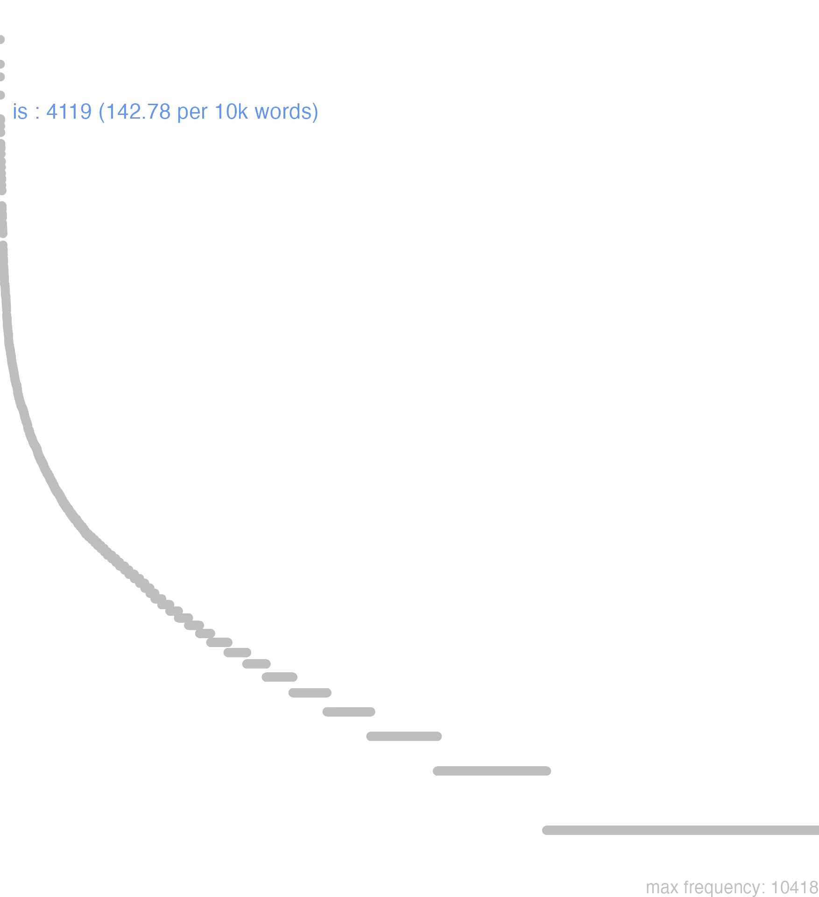

80 is
80.0.0.1 bases lexicais
id: http://lila-erc.eu/data/id/lemma/109083
classe: determinante
paradigma: pronominal
outras grafias: eis
variantes do lema:
no data
ĕă
ĕī
ĕam
ējus
ĭd
ĭs
no data
80.0.0.2 dicionários tradicionais
eis
dat. e abl. pI. de is.
ējus
ēius
gen. de is.
eum
acus. de is.
id
nom. e acus. sing. n. de is.
im
= eum Cie. Leg. 2, 60.
is ea, id
pron.
Obs.: Não tem valor demonstrativo, servindo, apenas, para substituir ou indicar um relativo anteriormente enunciado ou que o vai ser.
dat. e abl. pI. de is.
ējus
ēius
gen. de is.
eum
acus. de is.
id
nom. e acus. sing. n. de is.
im
= eum Cie. Leg. 2, 60.
is ea, id
pron.
Obs.: Não tem valor demonstrativo, servindo, apenas, para substituir ou indicar um relativo anteriormente enunciado ou que o vai ser.
1 Ele, ela, o, a, este, esta, isto, o supracitado, o referido Cés. B. Gal. 1, 4. 1.
2 Empregos mais gerais: et is, et is quidem, is quidem, isque, neque is idéia aumentativa ou limitativa Cíc. Phil. 3 31
3 Empregos mais gerais: is, qui em correlação com um relativo: o que, o supracitado que:
4 Empregos mais gerais: is ut ou is qui consecutivo: tal, de tal modo:
5 Em correlação com ac:
6 Empregos especiais: Com gen.:
7 Empregos especiais: Acus. adverbial: relativo a isto:
8 Empregos especiais: in eo = a este ponto:
9 Empregos especiais: id est, i.e.
[EXEMPLOS]
3
A. Albinus, is qui… scripsit C íc. Br. 81 “Aulo Albino, o que escreveu”.
4
non is vir est, ut ou qui … sentiat Cíc. Flac. 34 «ele não é um homem tal que compreenda».
5
in eo honore ac si T. Lív. 38. 54. 21 “na mesma consideração que se”.
6
id temporis cum Cíc. Mil. 28 «num momento em que».
7
id gaudeo Cíc. Q. Fr. 3, 19 «alegro-me com isto» .
8
non est in eo C íc. A t. 12, 40. 4 “não é a este ponto”.
9
poscere quaestionem, id est, jubere dicere Cíc. Fin. 2, 1 “solicitar uma pergunta, i.e., convidar a dizer”.
1 eă
nom. sing. f. e pI. n. de is.
1 eam
acus. f. de is.
1 ĭī
nom. pl. m. de is.
2 eī
dat. de is e nom. pI. masc.
2 eōs
acus. pI. m. de is.
no data
Is -ea id ejus gen ei dat
pron.
pron.
1 Cic. este, esta, isto, aquelle, tanto, tal.
ablat. Plaut. por Iis Ibus Plaut. dat. de. Is, ea, id Ei
Is ea id
1 elle, este, o tal
2 ponitur interdum Id pro Ob id
3 adverb. Demum cum Is significat omnino, vel solùm, vel profectó
[EXEMPLOS]
X
id aetatis pro in ea aetate, vel ejus aetatis
id genus pro ejus generis, & c
id temporis pro id tempus, vel eo tempore
idque principalmente pro Et maximè
Is ea id
1 este
80.0.0.3 dados de corpus
![This chart plots collocate by scoreSUBST, for the headword is here are all the values plotted: collocate: qui; scoreSUBST: 0. collocate: in; scoreSUBST: 0. collocate: ad; scoreSUBST: 0. collocate: ab; scoreSUBST: 0. collocate: que; scoreSUBST: 0. collocate: ut; scoreSUBST: 0. collocate: res; scoreSUBST: 3. collocate: ex; scoreSUBST: 0. collocate: cum; scoreSUBST: 0. collocate: modus; scoreSUBST: 4. collocate: quod; scoreSUBST: 0. collocate: locus; scoreSUBST: 3. collocate: de; scoreSUBST: 0. collocate: si; scoreSUBST: 0. collocate: ipse; scoreSUBST: 0. collocate: dies; scoreSUBST: 2. collocate: quidem; scoreSUBST: 0. collocate: apud; scoreSUBST: 0. collocate: ago; scoreSUBST: 0. collocate: enim; scoreSUBST: 0. collocate: autem; scoreSUBST: 0. collocate: tamen; scoreSUBST: 0. collocate: pars; scoreSUBST: 2. collocate: neque; scoreSUBST: 0. collocate: consilium; scoreSUBST: 2. collocate: qua2; scoreSUBST: 0. collocate: causa; scoreSUBST: 1. collocate: igitur; scoreSUBST: 0. collocate: fio; scoreSUBST: 0. collocate: ciuitas; scoreSUBST: 1. collocate: discipulus; scoreSUBST: 3. collocate: aduentus; scoreSUBST: 2. collocate: postridie; scoreSUBST: 0. collocate: numerus; scoreSUBST: 2. collocate: ob; scoreSUBST: 0. collocate: liber2; scoreSUBST: 2. collocate: interrogo; scoreSUBST: 0. collocate: libellus; scoreSUBST: 2. collocate: demum; scoreSUBST: 0. collocate: mercator; scoreSUBST: 2. collocate: deprecor; scoreSUBST: 0. collocate: doctrina; scoreSUBST: 1. collocate: obseruo; scoreSUBST: 0. collocate: uas; scoreSUBST: 1. collocate: posteaquam; scoreSUBST: 0. collocate: nuntio; scoreSUBST: 0. collocate: praecipio; scoreSUBST: 0. collocate: tempestas; scoreSUBST: 2. collocate: dimitto; scoreSUBST: 0. collocate: diligenter; scoreSUBST: 0. collocate: cupiditas; scoreSUBST: 1. collocate: praeter; scoreSUBST: 0. collocate: factum; scoreSUBST: 1](./Media/wordcloud__xx105-115xx__BY_collocate_scoreSUBST.webp)
![This chart plots collocate by scoreADJ, for the headword is here are all the values plotted: collocate: qui; scoreADJ: 0. collocate: in; scoreADJ: 0. collocate: ad; scoreADJ: 0. collocate: ab; scoreADJ: 0. collocate: que; scoreADJ: 0. collocate: ut; scoreADJ: 0. collocate: res; scoreADJ: 0. collocate: ex; scoreADJ: 0. collocate: cum; scoreADJ: 0. collocate: modus; scoreADJ: 0. collocate: quod; scoreADJ: 0. collocate: locus; scoreADJ: 0. collocate: de; scoreADJ: 0. collocate: si; scoreADJ: 0. collocate: ipse; scoreADJ: 0. collocate: dies; scoreADJ: 0. collocate: quidem; scoreADJ: 0. collocate: apud; scoreADJ: 0. collocate: ago; scoreADJ: 0. collocate: enim; scoreADJ: 0. collocate: autem; scoreADJ: 0. collocate: tamen; scoreADJ: 0. collocate: pars; scoreADJ: 0. collocate: neque; scoreADJ: 0. collocate: consilium; scoreADJ: 0. collocate: qua2; scoreADJ: 0. collocate: causa; scoreADJ: 0. collocate: igitur; scoreADJ: 0. collocate: fio; scoreADJ: 0. collocate: ciuitas; scoreADJ: 0. collocate: discipulus; scoreADJ: 0. collocate: aduentus; scoreADJ: 0. collocate: postridie; scoreADJ: 0. collocate: numerus; scoreADJ: 0. collocate: ob; scoreADJ: 0. collocate: liber2; scoreADJ: 0. collocate: interrogo; scoreADJ: 0. collocate: libellus; scoreADJ: 0. collocate: demum; scoreADJ: 0. collocate: mercator; scoreADJ: 0. collocate: deprecor; scoreADJ: 0. collocate: doctrina; scoreADJ: 0. collocate: obseruo; scoreADJ: 0. collocate: uas; scoreADJ: 0. collocate: posteaquam; scoreADJ: 0. collocate: nuntio; scoreADJ: 0. collocate: praecipio; scoreADJ: 0. collocate: tempestas; scoreADJ: 0. collocate: dimitto; scoreADJ: 0. collocate: diligenter; scoreADJ: 0. collocate: cupiditas; scoreADJ: 0. collocate: praeter; scoreADJ: 0. collocate: factum; scoreADJ: 0](./Media/wordcloud__xx105-115xx__BY_collocate_scoreADJ.webp)
![This chart plots collocate by scoreVERBO, for the headword is here are all the values plotted: collocate: qui; scoreVERBO: 0. collocate: in; scoreVERBO: 0. collocate: ad; scoreVERBO: 0. collocate: ab; scoreVERBO: 0. collocate: que; scoreVERBO: 0. collocate: ut; scoreVERBO: 0. collocate: res; scoreVERBO: 0. collocate: ex; scoreVERBO: 0. collocate: cum; scoreVERBO: 0. collocate: modus; scoreVERBO: 0. collocate: quod; scoreVERBO: 0. collocate: locus; scoreVERBO: 0. collocate: de; scoreVERBO: 0. collocate: si; scoreVERBO: 0. collocate: ipse; scoreVERBO: 0. collocate: dies; scoreVERBO: 0. collocate: quidem; scoreVERBO: 0. collocate: apud; scoreVERBO: 0. collocate: ago; scoreVERBO: 2. collocate: enim; scoreVERBO: 0. collocate: autem; scoreVERBO: 0. collocate: tamen; scoreVERBO: 0. collocate: pars; scoreVERBO: 0. collocate: neque; scoreVERBO: 0. collocate: consilium; scoreVERBO: 0. collocate: qua2; scoreVERBO: 0. collocate: causa; scoreVERBO: 0. collocate: igitur; scoreVERBO: 0. collocate: fio; scoreVERBO: 1. collocate: ciuitas; scoreVERBO: 0. collocate: discipulus; scoreVERBO: 0. collocate: aduentus; scoreVERBO: 0. collocate: postridie; scoreVERBO: 0. collocate: numerus; scoreVERBO: 0. collocate: ob; scoreVERBO: 0. collocate: liber2; scoreVERBO: 0. collocate: interrogo; scoreVERBO: 2. collocate: libellus; scoreVERBO: 0. collocate: demum; scoreVERBO: 0. collocate: mercator; scoreVERBO: 0. collocate: deprecor; scoreVERBO: 2. collocate: doctrina; scoreVERBO: 0. collocate: obseruo; scoreVERBO: 1. collocate: uas; scoreVERBO: 0. collocate: posteaquam; scoreVERBO: 0. collocate: nuntio; scoreVERBO: 2. collocate: praecipio; scoreVERBO: 2. collocate: tempestas; scoreVERBO: 0. collocate: dimitto; scoreVERBO: 2. collocate: diligenter; scoreVERBO: 0. collocate: cupiditas; scoreVERBO: 0. collocate: praeter; scoreVERBO: 0. collocate: factum; scoreVERBO: 0](./Media/wordcloud__xx105-115xx__BY_collocate_scoreVERBO.webp)
![This chart plots collocate by scoreADV, for the headword is here are all the values plotted: collocate: qui; scoreADV: 0. collocate: in; scoreADV: 0. collocate: ad; scoreADV: 0. collocate: ab; scoreADV: 0. collocate: que; scoreADV: 0. collocate: ut; scoreADV: 0. collocate: res; scoreADV: 0. collocate: ex; scoreADV: 0. collocate: cum; scoreADV: 0. collocate: modus; scoreADV: 0. collocate: quod; scoreADV: 0. collocate: locus; scoreADV: 0. collocate: de; scoreADV: 0. collocate: si; scoreADV: 0. collocate: ipse; scoreADV: 0. collocate: dies; scoreADV: 0. collocate: quidem; scoreADV: 2. collocate: apud; scoreADV: 0. collocate: ago; scoreADV: 0. collocate: enim; scoreADV: 1. collocate: autem; scoreADV: 0. collocate: tamen; scoreADV: 2. collocate: pars; scoreADV: 0. collocate: neque; scoreADV: 0. collocate: consilium; scoreADV: 0. collocate: qua2; scoreADV: 2. collocate: causa; scoreADV: 0. collocate: igitur; scoreADV: 2. collocate: fio; scoreADV: 0. collocate: ciuitas; scoreADV: 0. collocate: discipulus; scoreADV: 0. collocate: aduentus; scoreADV: 0. collocate: postridie; scoreADV: 2. collocate: numerus; scoreADV: 0. collocate: ob; scoreADV: 0. collocate: liber2; scoreADV: 0. collocate: interrogo; scoreADV: 0. collocate: libellus; scoreADV: 0. collocate: demum; scoreADV: 2. collocate: mercator; scoreADV: 0. collocate: deprecor; scoreADV: 0. collocate: doctrina; scoreADV: 0. collocate: obseruo; scoreADV: 0. collocate: uas; scoreADV: 0. collocate: posteaquam; scoreADV: 0. collocate: nuntio; scoreADV: 0. collocate: praecipio; scoreADV: 0. collocate: tempestas; scoreADV: 0. collocate: dimitto; scoreADV: 0. collocate: diligenter; scoreADV: 1. collocate: cupiditas; scoreADV: 0. collocate: praeter; scoreADV: 0. collocate: factum; scoreADV: 0](./Media/wordcloud__xx105-115xx__BY_collocate_scoreADV.webp)
![This chart plots collocate by scoreFUNC, for the headword is here are all the values plotted: collocate: qui; scoreFUNC: 0. collocate: in; scoreFUNC: 40. collocate: ad; scoreFUNC: 40. collocate: ab; scoreFUNC: 40. collocate: que; scoreFUNC: 0. collocate: ut; scoreFUNC: 30. collocate: res; scoreFUNC: 0. collocate: ex; scoreFUNC: 30. collocate: cum; scoreFUNC: 20. collocate: modus; scoreFUNC: 0. collocate: quod; scoreFUNC: 30. collocate: locus; scoreFUNC: 0. collocate: de; scoreFUNC: 20. collocate: si; scoreFUNC: 10. collocate: ipse; scoreFUNC: 0. collocate: dies; scoreFUNC: 0. collocate: quidem; scoreFUNC: 0. collocate: apud; scoreFUNC: 30. collocate: ago; scoreFUNC: 0. collocate: enim; scoreFUNC: 0. collocate: autem; scoreFUNC: 0. collocate: tamen; scoreFUNC: 0. collocate: pars; scoreFUNC: 0. collocate: neque; scoreFUNC: 0. collocate: consilium; scoreFUNC: 0. collocate: qua2; scoreFUNC: 0. collocate: causa; scoreFUNC: 0. collocate: igitur; scoreFUNC: 0. collocate: fio; scoreFUNC: 0. collocate: ciuitas; scoreFUNC: 0. collocate: discipulus; scoreFUNC: 0. collocate: aduentus; scoreFUNC: 0. collocate: postridie; scoreFUNC: 0. collocate: numerus; scoreFUNC: 0. collocate: ob; scoreFUNC: 20. collocate: liber2; scoreFUNC: 0. collocate: interrogo; scoreFUNC: 0. collocate: libellus; scoreFUNC: 0. collocate: demum; scoreFUNC: 0. collocate: mercator; scoreFUNC: 0. collocate: deprecor; scoreFUNC: 0. collocate: doctrina; scoreFUNC: 0. collocate: obseruo; scoreFUNC: 0. collocate: uas; scoreFUNC: 0. collocate: posteaquam; scoreFUNC: 10. collocate: nuntio; scoreFUNC: 0. collocate: praecipio; scoreFUNC: 0. collocate: tempestas; scoreFUNC: 0. collocate: dimitto; scoreFUNC: 0. collocate: diligenter; scoreFUNC: 0. collocate: cupiditas; scoreFUNC: 0. collocate: praeter; scoreFUNC: 10. collocate: factum; scoreFUNC: 0](./Media/wordcloud__xx105-115xx__BY_collocate_scoreFUNC.webp)
![This charts plots the frequency of lemma by author_Frequencies. The Hieronymus subcorpus registers the highest normalized frequency, with the value of 460.57 and an absolute frequency of 205. The Caesar subcorpus follows, with a normalized frequency of 243.6 and an absolute frequency of 645. the subcorpus with the least normalized frequency is Ovidius with the normalized value of 3.43 and an absolute freqeuncy of 2. here are all the values: subcorpus: Caesar ; normalized frequency: 645 ; absolute frequency: 243.598459098119. subcorpus: Cicero ; normalized frequency: 2703 ; absolute frequency: 168.386035732975. subcorpus: Horatius ; normalized frequency: 13 ; absolute frequency: 11.5442678270136. subcorpus: Ovidius ; normalized frequency: 2 ; absolute frequency: 3.43170899107756. subcorpus: Phaedrus ; normalized frequency: 12 ; absolute frequency: 18.2177015333232. subcorpus: Sallustius ; normalized frequency: 213 ; absolute frequency: 197.56979871997. subcorpus: Seneca ; normalized frequency: 288 ; absolute frequency: 53.7503965958082. subcorpus: Suetonius ; normalized frequency: 10 ; absolute frequency: 110.253583241455. subcorpus: Tacitus ; normalized frequency: 23 ; absolute frequency: 78.9564023343632. subcorpus: Vergilius ; normalized frequency: 5 ; absolute frequency: 9.65250965250965. subcorpus: Hieronymus ; normalized frequency: 205 ; absolute frequency: 460.570658279038](./Media/barchart__xx105-115xx__lemma_BY_author_Frequencies.webp)
![This charts plots the frequency of lemma by genre_Frequencies. The Prosa.ficcional subcorpus registers the highest normalized frequency, with the value of 460.57 and an absolute frequency of 205. The Prosa.histórica subcorpus follows, with a normalized frequency of 216.9 and an absolute frequency of 891. the subcorpus with the least normalized frequency is Poesia.trágica with the normalized value of 0.87 and an absolute freqeuncy of 1. here are all the values: subcorpus: Prosa.histórica ; normalized frequency: 891 ; absolute frequency: 216.899145548821. subcorpus: Prosa.filosófica ; normalized frequency: 677 ; absolute frequency: 111.530287804155. subcorpus: Prosa.oratória ; normalized frequency: 1706 ; absolute frequency: 163.797490230718. subcorpus: Prosa.epistolográfica ; normalized frequency: 607 ; absolute frequency: 160.841569728928. subcorpus: Poesia.lírica ; normalized frequency: 13 ; absolute frequency: 10.9363169849415. subcorpus: Poesia.didática ; normalized frequency: 14 ; absolute frequency: 11.8754771397065. subcorpus: Poesia.trágica ; normalized frequency: 1 ; absolute frequency: 0.868658790826963. subcorpus: Poesia.épica ; normalized frequency: 5 ; absolute frequency: 9.65250965250965. subcorpus: Prosa.ficcional ; normalized frequency: 205 ; absolute frequency: 460.570658279038](./Media/barchart__xx105-115xx__lemma_BY_genre_Frequencies.webp)
![This charts plots the frequency of lemma by period_Frequencies. The IV.d.C. subcorpus registers the highest normalized frequency, with the value of 460.57 and an absolute frequency of 205. The I.a.C. subcorpus follows, with a normalized frequency of 166.58 and an absolute frequency of 3579. the subcorpus with the least normalized frequency is I.d.C. with the normalized value of 46.2 and an absolute freqeuncy of 302. here are all the values: subcorpus: I.a.C. ; normalized frequency: 3579 ; absolute frequency: 166.581335815685. subcorpus: I.d.C. ; normalized frequency: 302 ; absolute frequency: 46.1985620315129. subcorpus: II.d.C. ; normalized frequency: 33 ; absolute frequency: 86.3874345549738. subcorpus: IV.d.C. ; normalized frequency: 205 ; absolute frequency: 460.570658279038](./Media/barchart__xx105-115xx__lemma_BY_period_Frequencies.webp)
et interrogabat eum
Vulg.Marc.5.9
E perguntava-lhe. [JDD]
quo modo id tulistis
Cic.Lig.25
Como suportastes isso? [JDD]
uirtutem eorum diligentiamque cognoscite
Cic.Cael.63
Conhecei o valor e a diligência deles. [JDD]
sed id quoque videbimus
Cic.Att.2.7.1
Mas isso também veremos. [JDD]
nam eorum quoque vehementer interest
Cic.Att.2.16.4
pois também a eles lhes interessa veementemente. [JDD]
et deprecabantur eum spiritus dicentes
Vulg.Marc.5.12
E os espíritos lhe imploravam, dizendo. [JDD]
id igitur Caelius non uidebat
Cic.Cael.57
Então Célio não via isso? [JDD]
et dicebant ei discipuli sui
Vulg.Marc.5.31
E seus discípulos lhe diziam. [JDD]
et stupebant super doctrina eius
Vulg.Marc.1.22
E eles ficavam estupefatos com sua doutrina. [JDD]
in eo flumine pons erat
Caes.Gal.2.5.5
Nesse rio havia uma ponte. [JDD, de outra edição]
aegre eo die sustentatum est
Caes.Gal.2.6.1
Com dificuldade ela se defendeu nesse dia. [JDD]
eum locum uallo fossaque muniuit
Caes.Gal.3.1.6
Fortificou esse local com paliçada e fossos. [JDD]
et responderunt ei discipuli sui
Vulg.Marc.8.4
E responderam-lhe seus discípulos. [JDD]
id agendum est ut satis uixerimus
Sen.Ep.23.10
É preciso proceder de modo que tenhamos vivido bastante. [JDD]
neque id a Clodio praetermissum est
Cic.Att.3.23.4
E isso não foi deixado de lado por Clódio. [JDD, de outra edição]
noram inductus relictus proiectus ab iis
Cic.Att.4.5.1
e conheci, cancelado, abandonado, rechaçado por eles. [JDD]
tarde qui conuenit praesertim id temporis
Cic.Mil.54
Lentamente: como isso é conveniente, principalmente nessa época? [JDD]
id ne igitur inquies facile fers
Cic.Att.4.18.2
“E isso então”, dirás, “suportas facilmente?” [JDD, de outra edição]
rogat ut eos ad ducenta perducam
Cic.Att.5.21.12
Roga que eu os faça chegar aos duzentos. [JDD]
illa uero eius cupiditas incredibilis est
Cic.Ver.2.4.58.8
Mas a sua célebre ambição é incrível. [JDD]
acriter in eo loco pugnatum est
Caes.Gal.2.10.1
Lutou-se encarniçadamente nesse local. [JDD]
valet autem auctoritas eius apud illum plurimum
Cic.Att.5.11.3
a autoridade deste vale muitíssimo junto a ele. [JDD]
num argumentis utendum in re eius modi
Cic.Ver.2.4.11.1
Por acaso é preciso recorrer a provas num caso desse tipo? [JDD]
Iesus autem misertus eius extendit manum suam
Vulg.Marc.1.41
Jesus, então, compadecido dele, estendeu sua mão [JDD]
qua re si id exspectas longum est
Cic.Att.1.20.4
Por isso, se aguardas isso, a coisa vai longe. [JDD]
postero die castra ex eo loco mouent
Caes.Gal.1.15.1
No dia seguinte, levantam acampamento daquele posto. [JDD]
venient autem dies cum auferetur ab eis sponsus
Vulg.Marc.2.20
Dias virão, porém, em que o noivo será arrancado deles [JDD]
quem ad modum igitur eum dies non fefellit
Cic.Mil.45
Como, portanto, o dia não o enganou? [JDD]
ad eam rescribam igitur et hoc quidem primum
Cic.Att.4.16.1
Vou, portanto, respondê-la e, na verdade, em primeiro lugar isto. [JDD]
dies conloquio dictus est ex eo die quintus
Caes.Gal.1.42.3
Foi marcado para a conversação o quinto dia a partir desse dia. [JDD]
et multi audientes admirabantur in doctrina eius dicentes
Vulg.Marc.6.2
e muitos, ao ouvir, ficavam admirados com o seu ensino, dizendo. [JDD]
placet igitur eos dimitti et augeri exercitum Catilinae
Sal.Cat.51.43
Me agrada então que eles sejam mandados embora e aumentem o exército de Catilina? [JDD]
quanto autem eis praecipiebat tanto magis plus praedicabant
Vulg.Marc.7.36
Porém, quanto mais ele ordenava, tanto mais eles divulgavam. [JDD]
et continuo dimisit eam febris et ministrabat eis
Vulg.Marc.1.31
e em seguida a febre a deixou e ela se pôs a servi-los. [JDD]
interim a compluribus ciuitatibus ad eum legati ueniunt
Caes.Gal.4.18.3
Entrementes, chegam até ele legados de muitas cidades. [JDD]
ea plaga nonne ad multos bonos viros pertinet
Cic.Att.2.1.10
Por acaso essa chaga não atinge a muitos homens bons? [JDD]
conantibus priusquam id effici posset adesse Romanos nuntiatur
Caes.Gal.6.4.1
Aos que tentavam, antes que pudessem fazê-lo, é anunciado que os romanos estavam lá. [JDD, de outra edição]
quia nondum frequentes armati conuenerant ea res consilium diremit
Sal.Cat.18.8
Porque ainda não tinham se reunido suficientes homens armados, esse fato frustrou o plano. [JDD]
infans fuit factus est pubes alia eius proprietas fit
Sen.Ep.118.14
Foi bebê; tornou-se jovem: se fez outra sua característica. [JDD]
numquam inquit uoluisset id quidem sed si uoluisset paruissem
Cic.Amici.37
“Nunca”, diz, “por certo ele teria querido isso; mas se tivesse querido, eu teria obedecido.” [JDD]
nam ut illi auderent hoc postulare Crassus eos impulit
Cic.Att.1.17.9
pois quando eles se atreveram a pedir isso, Crasso os impulsionou. [JDD]
eo celeriter confecto negotio rursus in hiberna legiones reduxit
Caes.Gal.6.3.3
Acabado esse negócio com rapidez, reconduziu as legiões aos quartéis de inverno. [JDD]
sed urbana plebes ea uero praeceps erat de multis causis
Sal.Cat.37.4
Mas a plebe urbana, essa, na verdade, por muitos motivos, estava inclinada para o precipício. [JDD]
et dimittentes turbam adsumunt eum ita ut erat in navi
Vulg.Marc.4.36
E eles, despedindo a multidão, juntam-se a ele assim como estava, na barca. [JDD]
ex Quinti fratris litteris suspicor iam eum esse in Britannia
Cic.Att.4.15.10
Por uma carta de meu irmão Quinto, suspeito que ele já esteja na Britânia. [JDD]
id fit etiam et legatorum et tribunorum et praefectorum diligentia
Cic.Att.5.17.2
Isso também se dá graças à aplicação dos legados, dos tribunos e dos prefeitos. [JDD]
itaque eos cedentis ab oppido Cassius insecutus rem bene gessit
Cic.Att.5.20.3
e assim, enquanto esses saíam da cidadela, Cássio, perseguindo-os, realizou um boa gesta. [JDD]
non enim id agimus ut exerceatur uox sed ut exerceat
Sen.Ep.15.8
Pois não fazemos isso para que a voz seja exercitada, mas para que ela nos exercite. [JDD]
ne id quidem facient negabunt id nisi sapienti posse concedi
Cic.Amici.18
Nem mesmo farão isso, dirão que isso não pode ser concedido a não ser ao sábio. [JDD]
at ne Bruto quidem id enim fortasse quispiam improbus dixerit
Cic.Phil.10.12.1
Mas Bruto também não; pois talvez algum descarado dirá isto. [JDD]
80.0.0.4 Diagrama de Zipf
